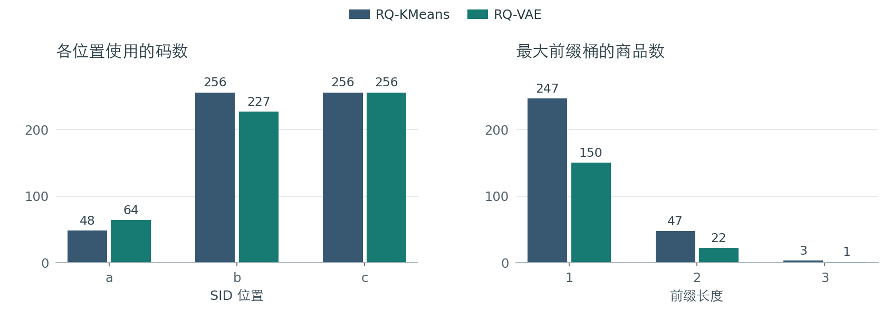
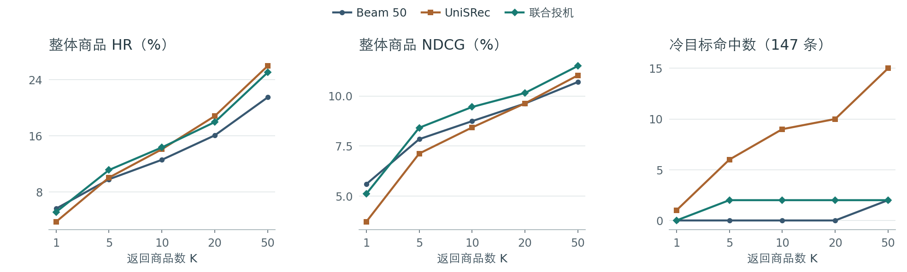
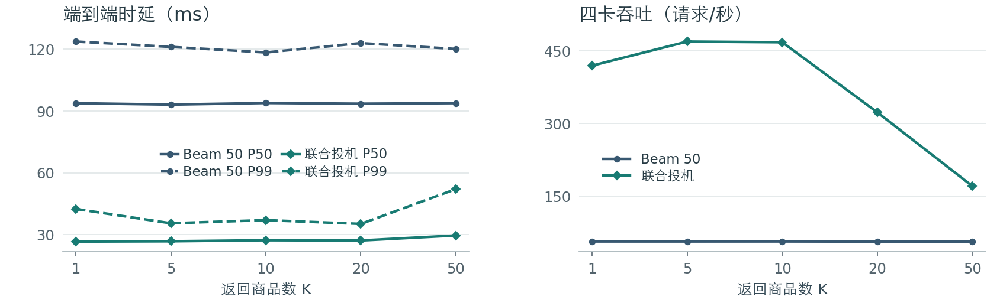

评估对象与指标口径
验证集含 4,532 条请求，测试集含 4,533 条。测试请求中，4,386 条的目标商品在训练交互中作为历史或目标出现过，归入暖组。其余 147 条归入冷组。
每条请求对应一件目标商品，按商品 ID 判断命中。设 N 为当前分组的请求数，ri 为第 i 条请求中目标商品的名次。若目标未进入前 K 件，该请求的得分为零。在这一单目标设定下，HR@K 与 Recall@K 相等。NDCG@K 还考虑目标所在的位置，名次越靠前，得分越高。
推荐质量和服务性能按相同 K 对比，深红粗体标出每项指标的最优实测值。整体、暖组和冷组分别比较。
RQ-VAE 与 RQ-KMeans 的目录编码
同一目录包含 3,686 件商品。RQ-KMeans 发布索引给出了 3,670 个不同的完整 SID，其中 15 组 SID 由多件商品共享。本轮 RQ-VAE 导出后，每件商品都有唯一的三位 SID，按完整 SID 命中与按商品 ID 命中的结果一致。

| 目录审计 | 原 RQ-KMeans | 本轮 RQ-VAE |
|---|---|---|
| 目录商品 | 3,686 | 3,686 |
| 唯一完整 SID | 3,670 | 3,686 |
| 完整 SID 碰撞组 | 15 | 0 |
| 碰撞组内商品 | 31 | 0 |
| 超额重复编码 | 16 | 0 |
| 各位置的实际用码数 | 48 / 256 / 256 | 64 / 227 / 256 |
| 不同前缀数（长度 1 / 2 / 3） | 48 / 2295 / 3670 | 64 / 1788 / 3686 |
| 最大前缀桶（长度 1 / 2 / 3） | 247 / 47 / 3 | 150 / 22 / 1 |
RQ-VAE 对训练商品向量中心化后，按最近码分配得到 3,065 个不同的完整 SID。固定前两位并按残差距离分配第三位后，唯一 SID 增至 3,686 个，暖商品留出集的重建均方误差（MSE）从 0.363119 变为 0.367556。原 RQ-KMeans 的归档仅含发布索引，缺少可供对照的重建误差及训练中间量。
SFT 与 GRPO 的直接生成评估
使用相同的 RQ-VAE 目录和 4,533 条测试请求，以宽度为 50 的受约束 beam 搜索比较 SFT 和 GRPO 的检查点。经 GRPO 训练后，HR@10 从 11.074% 升至 12.574%，NDCG@10 从 7.247% 升至 8.744%。
| K | SFT HR | SFT NDCG | GRPO HR | GRPO NDCG |
|---|---|---|---|---|
| 1 | 3.816% | 3.816% | 5.603% | 5.603% |
| 3 | 7.324% | 5.940% | 8.405% | 7.273% |
| 5 | 8.471% | 6.410% | 9.795% | 7.846% |
| 10 | 11.074% | 7.247% | 12.574% | 8.744% |
| 20 | 14.494% | 8.107% | 16.060% | 9.624% |
| 50 | 20.979% | 9.389% | 21.487% | 10.697% |
商品级推荐质量与冷暖分组
三条路线使用同一批测试请求。直接生成取 GRPO 的 beam 搜索结果，UniSRec 原排取内积得分最高的商品，联合投机推理用 GRPO 为 UniSRec 草拟的候选打分。每条路线最终返回前 K 件商品。

只推荐 1 件商品时，直接生成的整体 HR 最高。推荐 5 件和 10 件时，联合方案的整体 HR 和 NDCG 均最高。列表扩展到 50 件时，联合方案的 NDCG 为 11.496%，高于 UniSRec 原排的 11.029%，但整体 HR 从原排的 25.965% 降至 25.039%，冷目标命中也从 15 条降至 2 条。
| K | 方案 | 整体 HR | 整体 NDCG | 暖 HR | 暖 NDCG | 冷命中 | 冷 HR | 冷 NDCG |
|---|---|---|---|---|---|---|---|---|
| 1 | 直接生成（beam 50） | 5.603% | 5.603% | 5.791% | 5.791% | 0/147 | 0.000% | 0.000% |
| 1 | UniSRec 原排 | 3.728% | 3.728% | 3.830% | 3.830% | 1/147 | 0.680% | 0.680% |
| 1 | 联合投机推理 | 5.118% | 5.118% | 5.290% | 5.290% | 0/147 | 0.000% | 0.000% |
| 5 | 直接生成（beam 50） | 9.795% | 7.846% | 10.123% | 8.109% | 0/147 | 0.000% | 0.000% |
| 5 | UniSRec 原排 | 10.038% | 7.129% | 10.237% | 7.273% | 6/147 | 4.082% | 2.826% |
| 5 | 联合投机推理 | 11.118% | 8.416% | 11.446% | 8.679% | 2/147 | 1.361% | 0.556% |
| 10 | 直接生成（beam 50） | 12.574% | 8.744% | 12.996% | 9.037% | 0/147 | 0.000% | 0.000% |
| 10 | UniSRec 原排 | 14.075% | 8.430% | 14.341% | 8.597% | 9/147 | 6.122% | 3.454% |
| 10 | 联合投机推理 | 14.339% | 9.450% | 14.774% | 9.753% | 2/147 | 1.361% | 0.419% |
| 20 | 直接生成（beam 50） | 16.060% | 9.624% | 16.598% | 9.947% | 0/147 | 0.000% | 0.000% |
| 20 | UniSRec 原排 | 18.818% | 9.630% | 19.220% | 9.832% | 10/147 | 6.803% | 3.621% |
| 20 | 联合投机推理 | 17.957% | 10.150% | 18.513% | 10.478% | 2/147 | 1.361% | 0.353% |
| 50 | 直接生成（beam 50） | 21.487% | 10.697% | 22.161% | 11.047% | 2/147 | 1.361% | 0.254% |
| 50 | UniSRec 原排 | 25.965% | 11.029% | 26.493% | 11.256% | 15/147 | 10.204% | 4.261% |
| 50 | 联合投机推理 | 25.039% | 11.496% | 25.832% | 11.871% | 2/147 | 1.361% | 0.295% |
在线时延、吞吐与批次复核
在 NVIDIA H20 上，用 256 条固定请求比较直接生成与联合投机推理。每种配置预热后重复三遍。端到端时延取单卡每批 1 条请求的测量结果，吞吐取每卡每批 4 条请求的测量结果。一次请求完成一份推荐列表，列表中每件商品对应三个输出 SID token。

| K | 路线 | P50（ms） | P95（ms） | P99（ms） | 单卡请求/s | 四卡请求/s | 四卡商品/s | 四卡输出token/s |
|---|---|---|---|---|---|---|---|---|
| 1 | 直接生成（beam 50） | 93.78 | 104.72 | 123.70 | 14.28 | 56.32 | 56.32 | 168.95 |
| 1 | 联合投机推理 | 26.67 | 28.69 | 42.49 | 112.50 | 419.18 | 419.18 | 1,257.55 |
| 5 | 直接生成（beam 50） | 93.11 | 103.83 | 121.11 | 14.28 | 56.30 | 281.51 | 844.54 |
| 5 | 联合投机推理 | 26.80 | 28.31 | 35.53 | 115.28 | 468.91 | 2,344.56 | 7,033.68 |
| 10 | 直接生成（beam 50） | 93.88 | 105.17 | 118.39 | 14.29 | 56.35 | 563.53 | 1,690.58 |
| 10 | 联合投机推理 | 27.32 | 29.26 | 37.08 | 115.98 | 467.43 | 4,674.31 | 14,022.94 |
| 20 | 直接生成（beam 50） | 93.54 | 104.05 | 122.93 | 14.22 | 56.07 | 1,121.44 | 3,364.32 |
| 20 | 联合投机推理 | 27.19 | 28.95 | 35.24 | 81.51 | 322.90 | 6,457.96 | 19,373.88 |
| 50 | 直接生成（beam 50） | 93.80 | 104.30 | 120.11 | 14.29 | 56.16 | 2,807.95 | 8,423.84 |
| 50 | 联合投机推理 | 29.62 | 45.84 | 52.12 | 45.52 | 170.70 | 8,534.88 | 25,604.63 |
逐 token 计时与整批响应
直接生成在各 K 下均使用宽度为 50 的 beam，因此共用一组内部 token 计时。TTFT 从请求准备开始计至首个 SID token 选定。TPOT 取首个和第三个 SID token 选定时刻之间的平均步长，排除换行和 EOS。抽检的 24 次完整 beam 排序在添加计时前后逐位一致。
| 纯 beam50 指标 | 均值 | P50 | P95 | P99 |
|---|---|---|---|---|
| 内部首 SID token 时延（TTFT） | 48.410 | 46.802 | 56.860 | 60.915 |
| 后续 SID token 时延（TPOT） | 13.062 | 12.812 | 13.739 | 16.945 |
联合方案一次交付整个列表。其单位输出摊销时延用单卡单请求的端到端总用时除以实际交付的 SID token 总数，各 K 的实测值见所选方案的在线性能。
批大小对排序的影响
在相同的 256 条请求上，按原批大小 4 复跑，各 K 的完整排序均与归档一致。改为每批 1 条后，返回 50 件商品时有 153 条请求的商品集合相同，完整顺序相同的请求为 0 条。
| K | B1 与 B4 集合一致 | B1 与 B4 全序一致 | B4 与归档全序一致 | B1 减 B4 NDCG |
|---|---|---|---|---|
| 1 | 254/256 | 254/256 | 256/256 | +0.000 |
| 5 | 246/256 | 224/256 | 256/256 | +0.000 |
| 10 | 241/256 | 146/256 | 256/256 | +0.000 |
| 20 | 224/256 | 31/256 | 256/256 | -0.004 |
| 50 | 153/256 | 0/256 | 256/256 | +0.068 |
所选方案在各 K 下的质量与在线性能
联合方案在测试前固定配置。下列结果对应同一配置在五种推荐列表长度下的表现。
推荐质量
| K | 验证 NDCG | 测试 HR | 测试 NDCG | 暖 HR | 暖 NDCG | 冷命中 | 冷 HR | 冷 NDCG |
|---|---|---|---|---|---|---|---|---|
| 1 | 5.958% | 5.118% | 5.118% | 5.290% | 5.290% | 0/147 | 0.000% | 0.000% |
| 5 | 9.073% | 11.118% | 8.416% | 11.446% | 8.679% | 2/147 | 1.361% | 0.556% |
| 10 | 9.954% | 14.339% | 9.450% | 14.774% | 9.753% | 2/147 | 1.361% | 0.419% |
| 20 | 10.865% | 17.957% | 10.150% | 18.513% | 10.478% | 2/147 | 1.361% | 0.353% |
| 50 | 11.927% | 25.039% | 11.496% | 25.832% | 11.871% | 2/147 | 1.361% | 0.295% |
在线性能
| K | P50（ms） | P95（ms） | P99（ms） | 单卡请求/s | 四卡请求/s | 四卡商品/s | 四卡输出token/s | 单位输出摊销（ms/token） | B4 峰值显存（GiB） |
|---|---|---|---|---|---|---|---|---|---|
| 1 | 26.67 | 28.69 | 42.49 | 112.50 | 419.18 | 419.18 | 1,257.55 | 9.202 | 1.257 |
| 5 | 26.80 | 28.31 | 35.53 | 115.28 | 468.91 | 2,344.56 | 7,033.68 | 1.811 | 1.158 |
| 10 | 27.32 | 29.26 | 37.08 | 115.98 | 467.43 | 4,674.31 | 14,022.94 | 0.925 | 1.193 |
| 20 | 27.19 | 28.95 | 35.24 | 81.51 | 322.90 | 6,457.96 | 19,373.88 | 0.462 | 1.193 |
| 50 | 29.62 | 45.84 | 52.12 | 45.52 | 170.70 | 8,534.88 | 25,604.63 | 0.238 | 1.193 |
返回 50 件商品时，测试 NDCG 为 11.496%，单请求时延中位数为 29.62 ms，P99 为 52.12 ms。此时每条请求首轮草拟 100 件候选。在相同的 256 条计时请求中，不同两位 SID 前缀数的中位数为 62.5，有 115 条请求超过 64 个。验证器复用相同前缀的状态，每块最多处理 64 个分支，超过这个数量就需要分块进行多次前向计算。